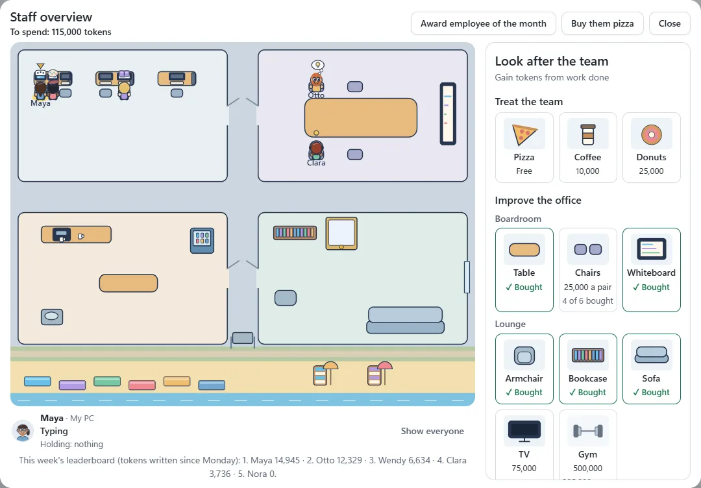
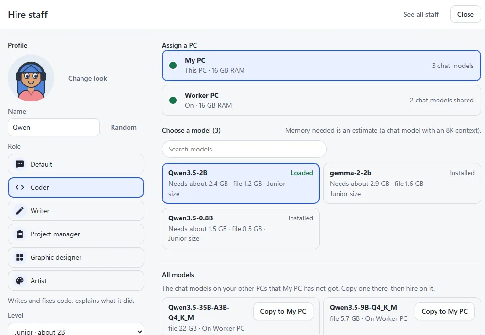
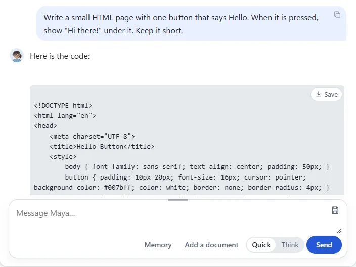
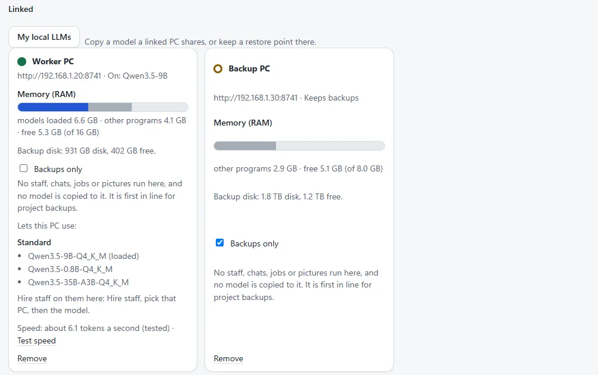
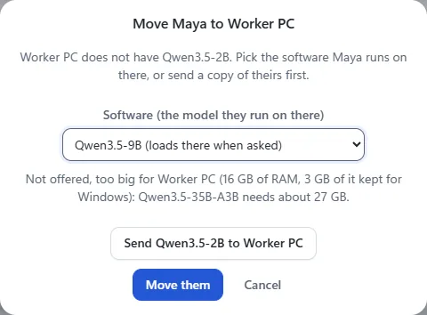
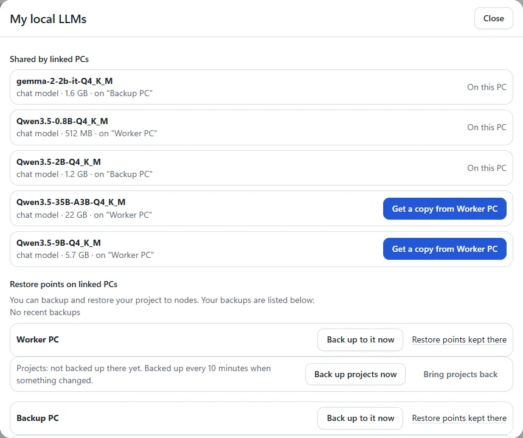
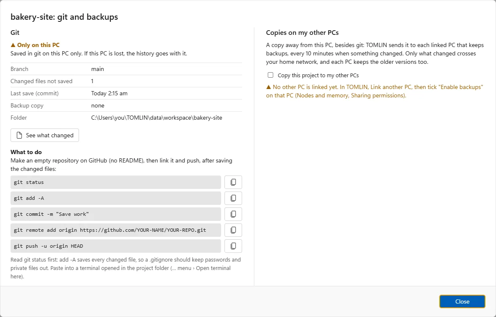
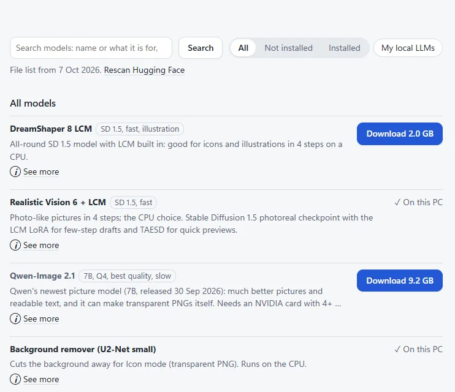
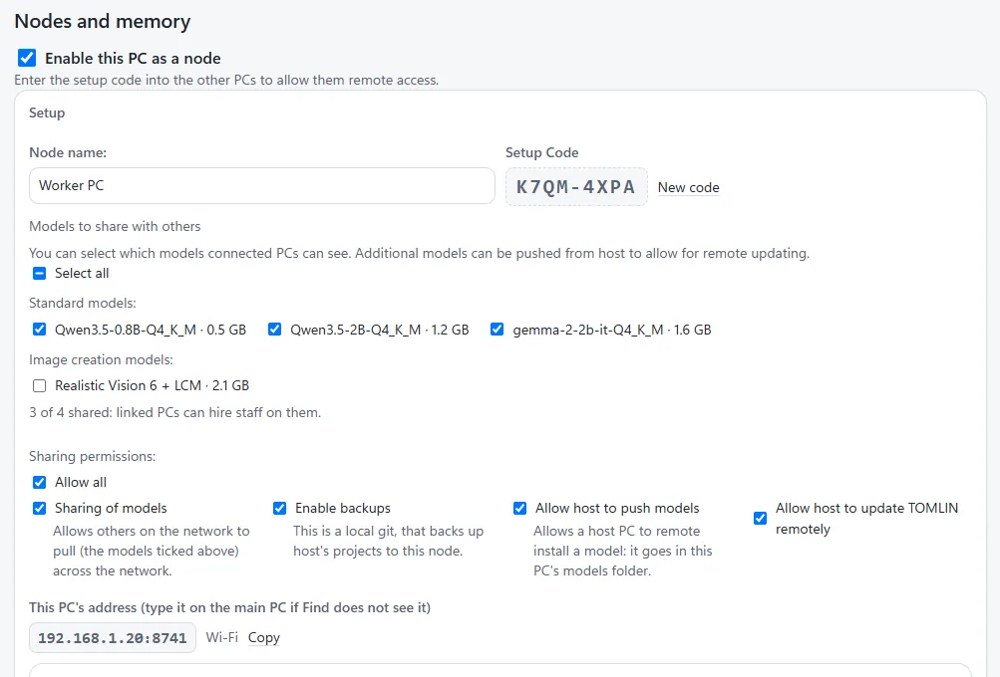
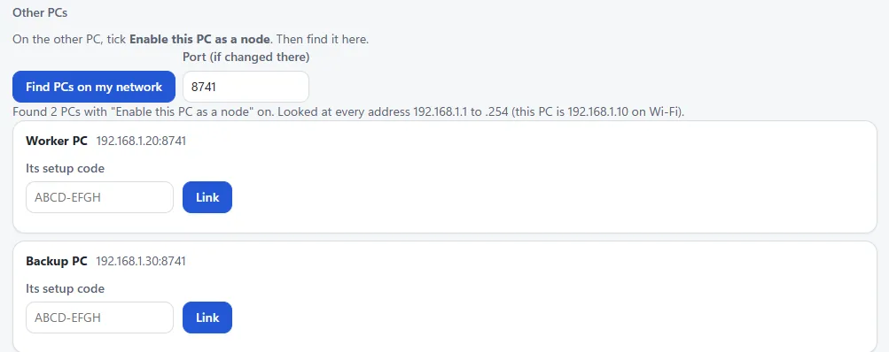

Your own AI team, on the PCs you already have.
TOMLIN runs chat and picture models on your own computers. Hire staff, give each one a role, a model and a PC, and watch them write, code and draw for your projects in a little office of their own.
- Runs on your own PCs
- No account to make
- Free for personal use
- A graphics card is optional

Why use TOMLIN
A chat box answers one question at a time. TOMLIN gives you a team that works on your PCs, keeps its work in your folders, and stays yours.
Yours, on your PCs
Chats, staff and files stay on your computers. Nothing goes to an outside service except what you start yourself, such as downloading a model.
Staff, not a chat box
A coder, a writer, an artist, a project manager: each with a level, a look and the model that suits the job.
Uses what you have
It runs on the processor first and uses a graphics chip when there is one. An old laptop can run the small models.
All your PCs as one
Link the other PCs in your home and spread the team across them. Each PC does its own work, side by side.
Work that is kept
Projects, saved code, notes, snippets and prompts, in folders you can open. Git and a built-in audit for your sites.
Backups across your PCs
Your other PCs can keep copies of your projects and restore points, over your home network, with no internet needed.
What it can do
Start with one PC. When that works, add the others.
Hire staff for the job
Every hire ties three things together: who they are (a role and a level), the model they think with, and the PC that model runs on. Hire staff shows the memory each model needs, and says when one is a tight fit.
- Six roles: Default, Coder, Writer, Project manager, Graphic designer and Artist.
- All models lists the models your other PCs have, with a button to copy one across.

Chat, and keep what they make
Talk to any of your staff. Put a chat in a project and its work goes into that project's folder: Save on a block of code puts it in a file.
- Subjects keep each piece of work with a person apart.
- Scratch pad, snippets and prompts are the same in every chat, and no model reads them.
- Quick or Think: answer straight away, or work it out first.

Link the other PCs in your home
On another PC, tick Enable this PC as a node. On yours, Find PCs on my network and type its setup code. The link is encrypted, and the other PC keeps no history of the work beyond token counts and an answer you have not collected yet.
- The PC's owner stays in charge: each linked PC has its own app lock, and its owner decides what linked PCs may do there.
- Backups only: a PC that keeps backups and takes no other work.

Move staff to where the memory is
Drag someone onto another PC's desk. TOMLIN offers only the models that fit that PC's memory, says why the others are left out, and can send their own model over first.

Download a model once
Models are big. My local LLMs lists every model your linked PCs share, and copies one across your home network instead of downloading it again. A copy cut short carries on where it stopped.

Your projects, with git
The Bridge lists your project folders with their git state, runs a local copy, checks a site you host, and runs a built-in audit before you publish. It catches common faults, not everything.
- The exact git commands to copy, for each project's state.
- Copies on your other PCs every 10 minutes when a project changed.

Screenshots
Taken on a test copy with made-up staff, PCs and addresses. Help, inside TOMLIN, has these and more, step by step.



What it needs
A Windows PC is enough to start. More memory runs bigger, smarter models.
| Windows | 64-bit Windows (tested on Windows 11). |
|---|---|
| Nothing else to install | The zip carries its own Node.js and the model runners for the processor and for any graphics chip. The runners need Microsoft's Visual C++ Runtime: most PCs have it, and Install TOMLIN.cmd offers it when it is missing. |
| Memory (RAM) | It depends on the model; see the table below. TOMLIN works out what each model needs and keeps 3 GB for Windows. |
| A graphics card | Optional. Chat runs on the processor first; a graphics card makes it faster. A picture takes about 3 minutes on a laptop's processor and about 50 seconds on its built-in graphics chip (an Intel HD 520, 512 px, 4 steps). |
| Disk | Room for TOMLIN and for the models you download: from 0.5 GB for the smallest chat model to 22 GB for the biggest below. |
| Internet | Only to download models. Linking your PCs uses your home network. |
| Chat model | Download | Memory it needs | Runs on a PC with |
|---|---|---|---|
| Qwen 3.5 0.8B: fastest | 0.5 GB | about 1.5 GB | 8 GB of RAM |
| Qwen 3.5 2B | 1.2 GB | about 2.4 GB | 8 GB of RAM |
| Gemma 2 2B | 1.6 GB | about 2.9 GB | 8 GB of RAM |
| Qwen 3.5 9B: balanced | 5.7 GB | about 8.3 GB | 16 GB of RAM |
| Qwen 3.5 35B-A3B: best answers | 22 GB | about 27 GB | 32 GB of RAM |
"Memory it needs" is the model's file, its working memory for an 8K-token context (about 6,000 words) and the runner, as TOMLIN works it out; a model also fits when a graphics card's own memory holds it. Measured: Qwen 3.5 0.8B wrote 17.7 tokens a second on an Intel HD 520 laptop, and Qwen 3.5 35B-A3B 5.2 tokens a second on a 32 GB desktop with no graphics card. A token is about three quarters of a word. Inside TOMLIN, What can my PC run? works it out for your own PC.
How to install
You are already halfway there: this page came out of the zip.
- Unzip the whole folder somewhere you keep programs (not inside the zip itself).
- Double-click Install TOMLIN.cmd. It asks first, needs no administrator, and adds TOMLIN to the Start menu and Settings > Apps.
- Windows may warn the first time: press More info, then Run anyway. The installer is not signed.
- TOMLIN starts, with an icon by the clock that opens it. Add a model, then Hire staff. Help, at the top right, takes you step by step.
Rather not install? Start TOMLIN.cmd runs it from this folder; closing its command window stops TOMLIN and every model it loaded.